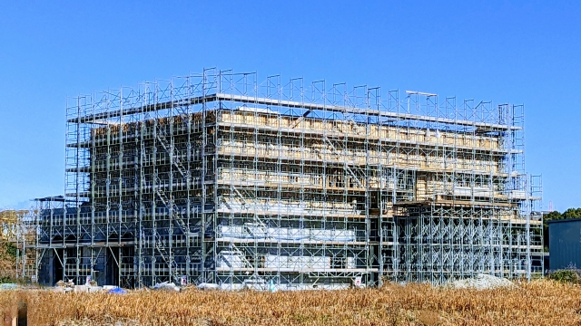
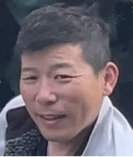
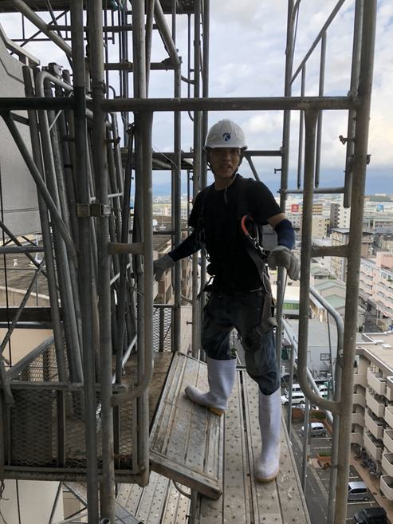
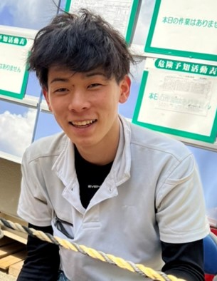

足場とび ― 株式会社風見。すべての工事は、私たちの足場から始まる。
福岡・糸島で、一生ものの技を継ぐ仲間を募集しています。
ビルも、橋も、大きな建物はすべて、足場がなければ建ちません。他の職人が安全に、気持ちよく働けるのは、私たちが組んだ足場があるからです。表には出ないけれど、現場のすべてを足元から支える。それが足場とびです。
風見が扱うのは、枠組足場・次世代足場による大型物件。スピードも、美しさも、なにより安全も。妥協しない職人たちが、福岡・糸島で腕を磨いています。
風見は「足場とび」の専門会社です。枠組足場・次世代足場を使い、大型物件の足場を組み上げます。手間請けに特化し、一つの技を深く磨きます。
高い場所で、寸分の狂いもなく組み上げる。最初は怖くても、先輩がつきっきりで教えます。半年も経てば、自分の手で空に道をつくれるようになる。手に職をつけたい人に、これ以上ない仕事です。
いちばん多い現場です。下から順に、上へ上へとせり上げていきます。何階建てでも組みます。組み上がったときの高さは、写真では伝わりません。
街なかの狭い敷地。隣の建物とのすき間が数十センチということもあります。段取りの腕が出る現場です。
特別支援学校、中学校の改修、体育館や博物館。休みの日に子どもが使う建物を、自分が組んだ足場で直します。
600棟という規模の団地を手がけたこともあります。何ヶ月も同じ現場に通い、街ひとつが新しくなるのを見ます。
とにかく広い。班に分かれて、端から端まで組んでいきます。人数がいる会社でないと受けられない仕事です。
横断歩道橋や橋りょうの吊り足場。道路や川の上に、宙づりで足場をつくります。できる会社は多くありません。入社してすぐは無理でも、いずれ任される仕事です。
※お客様との契約上、物件名の公開は控えています。面接では具体的にお話しできます。
足場工事のご依頼・協力業者の方は、こちらのページへ →
未経験でも月給25万円以上。
経験・資格でしっかり昇給します。頑張りは、給与で返します。
しっかり休んで、しっかり働く。GW・夏季・年末年始の長期休暇もあります。プライベートも大切に。
社員旅行は、ご家族・パートナーの費用まで会社が負担。仲間も、その大切な人も、まとめて大事にします。
入社時に必要な道具は会社が用意。自腹を切る必要はありません。手ぶらで来てください。
通勤の交通費は全額会社負担。遠方からの入社にかかる赴任費用も会社が負担します。
会社の頑張りは、賞与でしっかり還元。日々の努力が、かたちになって返ってきます。

.jpg)
.jpg)
.jpg)
基本は直行直帰。先輩の送迎、または自分で現場へ向かいます。会社に立ち寄る必要はなく、通勤の無駄がありません。
図面をもとに足場を組み上げていきます。最初は資材を運ぶところから。慣れれば自分で組み立てを任されます。
午前の作業の合間にひと息。水分補給をしっかりとって、無理なく体を労わります。
しっかり1時間。体を使う仕事だからこそ、休憩と食事は大事。
先輩との雑談で現場の空気も和みます。
午前の続きを進めます。一段ずつ空に近づいていく感覚は、この仕事ならでは。組み上がった足場は達成感そのもの。
午後にもう一度ひと息。こまめな休憩で集中力を保ち、最後まで安全第一で作業します。
道具を片付け、安全を確認して終了。残業は少なめ。完全週休2日で、しっかり休んで次の現場へ向かいます。



足場工事のご依頼・協力業者に関するお問い合わせは こちらのページをご覧ください。
未経験でも、まったく問題ありません。
必要なのは、やってみたいという気持ちだけ。
まずは話を聞くだけでも大歓迎です。気軽に連絡してください。
※質問だけの電話も大歓迎。出られない時は、後ほど折り返します。